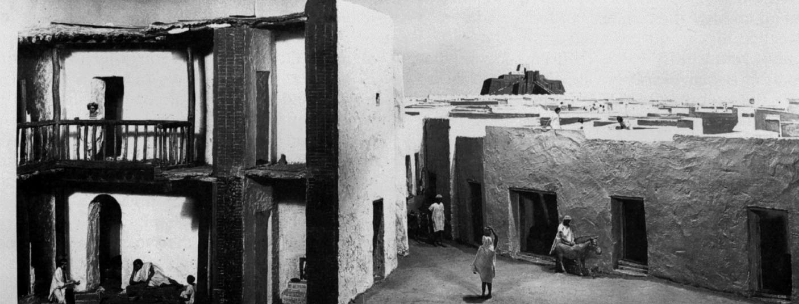
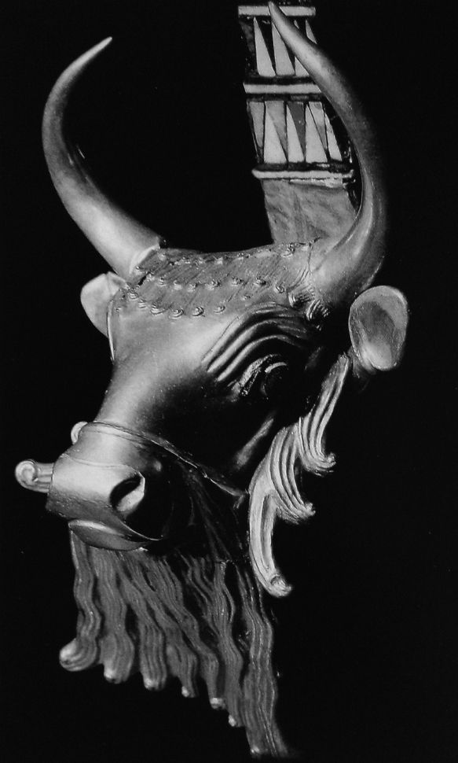
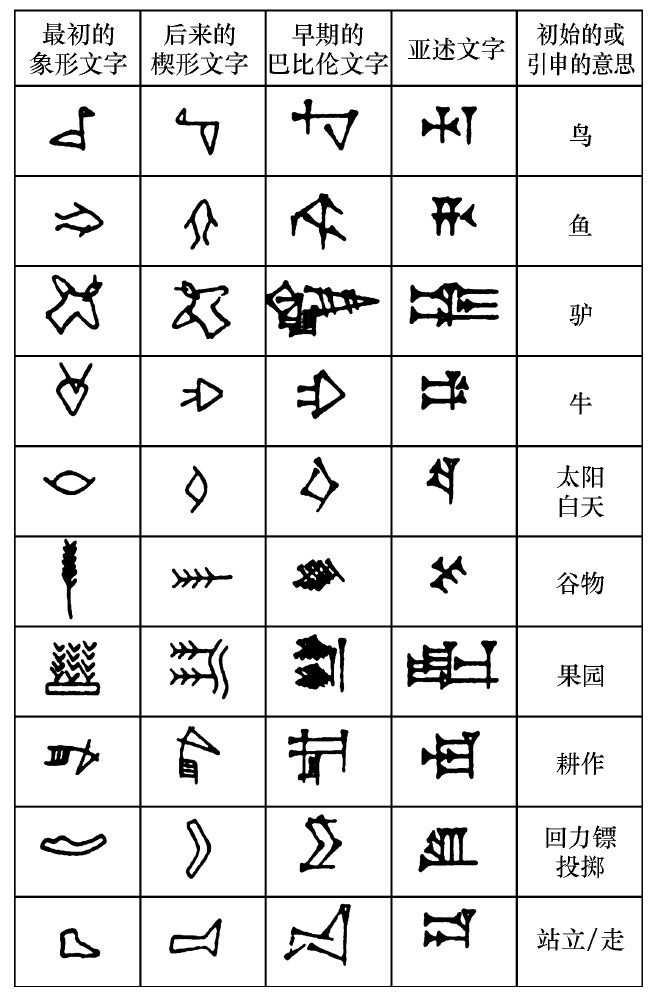
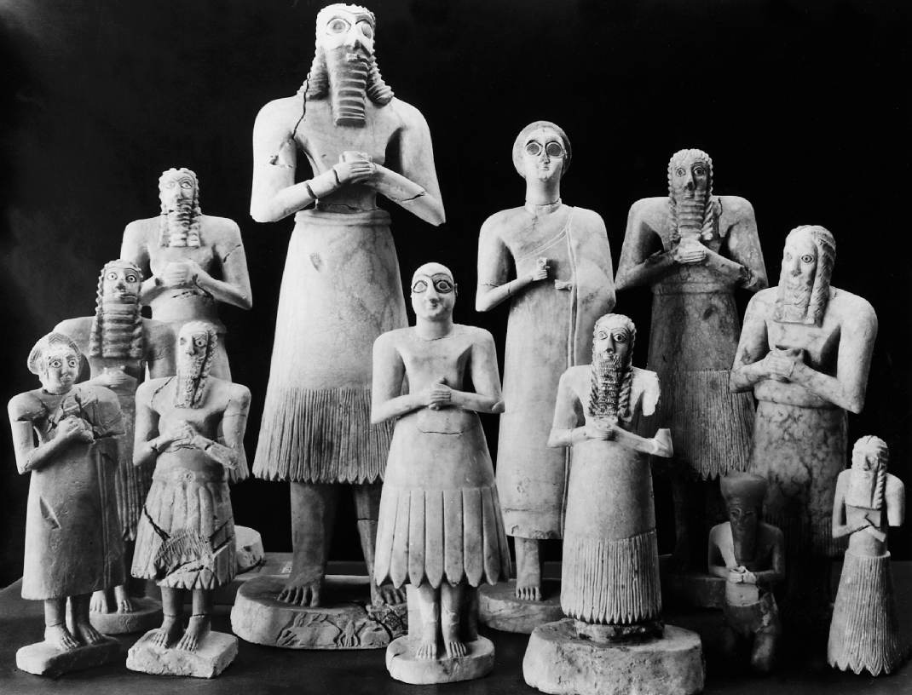
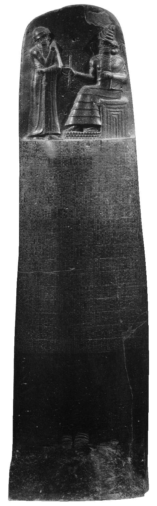
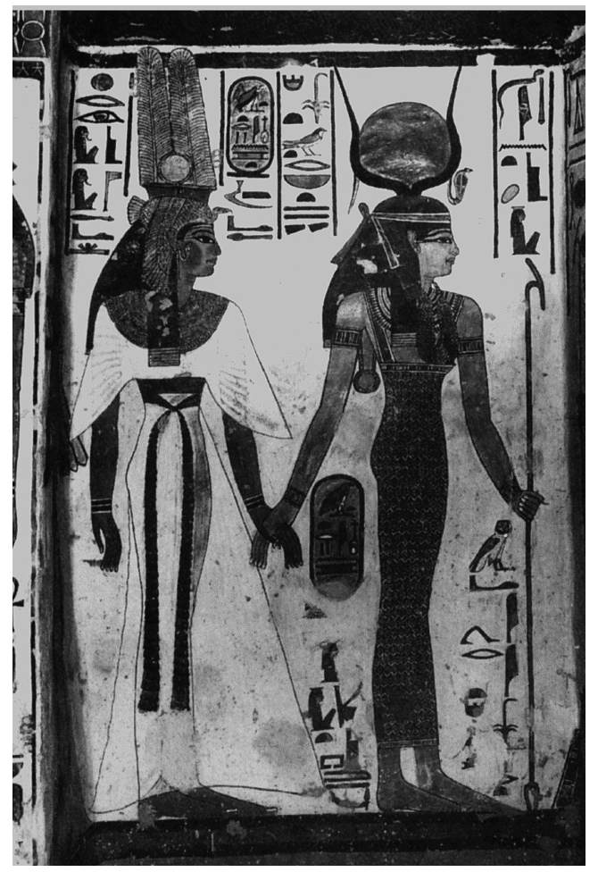
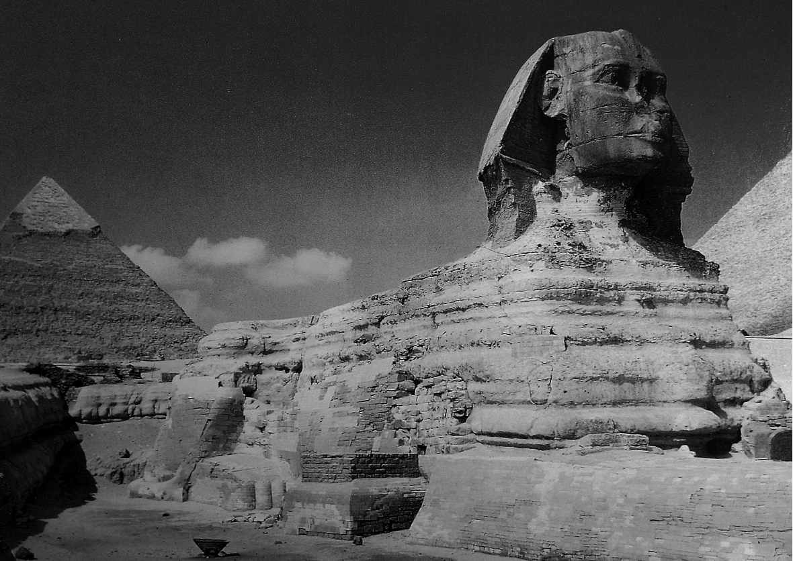
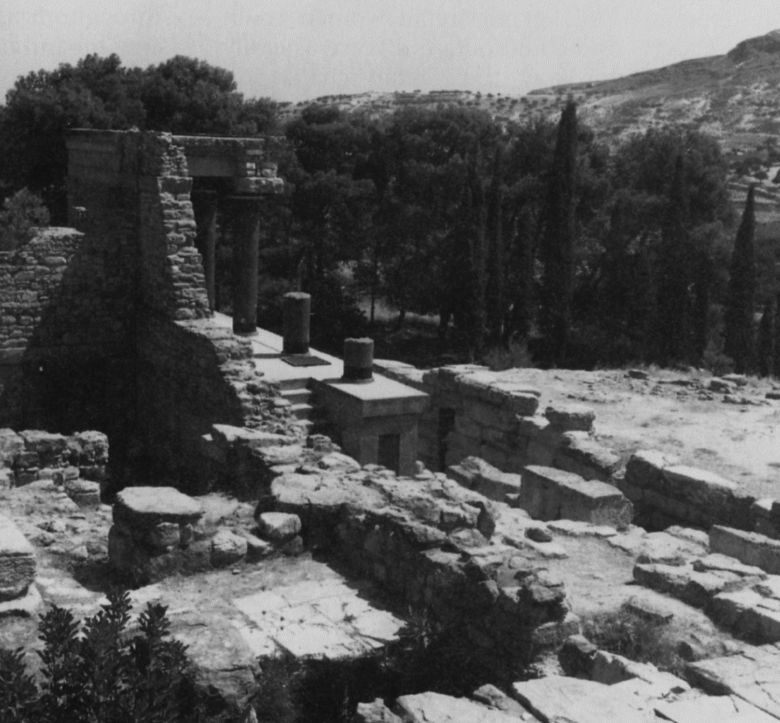
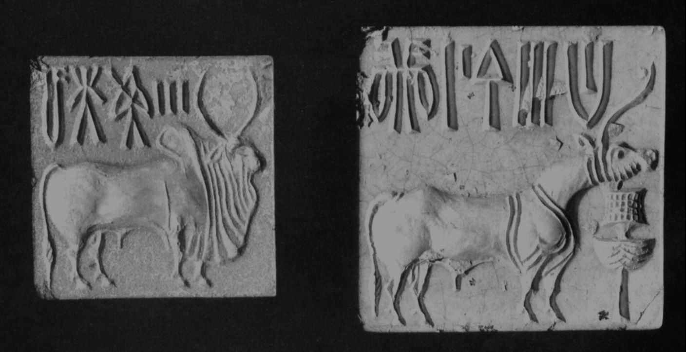
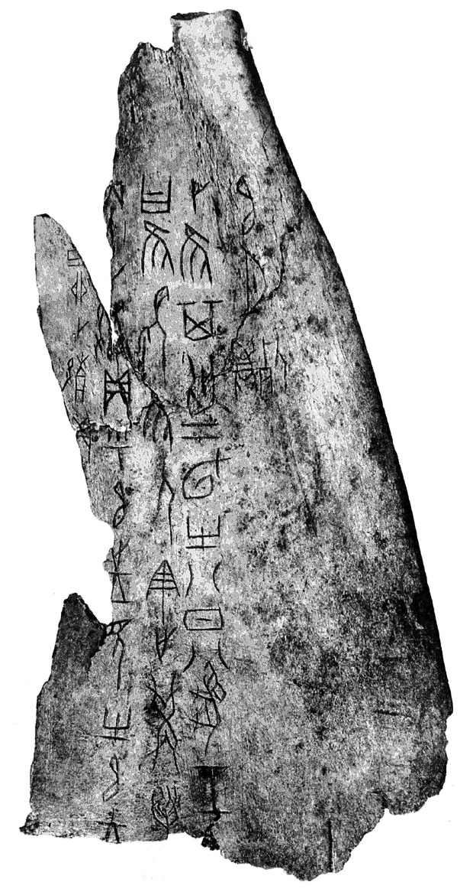

我们在前面章节中已提到，新石器时代的各种文化随农业与畜牧业的比例、种植的植物和饲养的动物的种类的不同而迥然相异。同样的道理，散布于世界各地的古代文明也有着巨大的差异。这些古代文明中的每一个都有其与众不同之处，都是一种独特的类型。这些类型一直持续到今天，因此，无论谁到了一个陌生的城市，都能立刻从该城市的建筑风格、社会风俗、食物和所用的语言判断出这个城市是中国的、印度的、中东的还是西欧的。
在考虑各种古代文明的独特性之前，我们应该承认它们还具有某些共性，其中最重要的两个共性或许是，社会关系的新的不平等和性别关系的新的不平等。
社会不平等源于这一事实：所有文明都建立在纳贡关系而不是血亲关系的基础上。日常生活不是取决于亲属之间的互助关系，而是取决于税收、地租和劳役形式的纳贡关系。因此，那位埃及父亲所描述的剥削是一种普遍情况，而非例外情况。虽然似乎尼罗河畔的那些农民、石匠和金属加工工人所受的待遇异常苛刻，令人难以置信，但现存的许多资料也同样描绘了在其他所有文明中存在的野蛮剥削。公元1世纪中国汉朝的一位观察家描述道，一个农民的“双腿像烧过的炭棒，后背结满盐痂，皮肤像锥子都刺不穿的皮革，拖着扭曲的脚掌和疼痛的腿脚蹒跚前行”[3]。
这种不平等一直持续到近代；在沙皇统治下的俄国，富裕的贵族们通常给他们的每个乡间别墅都配上300个至800个仆人。对这些贵族来说，买卖、质押或交换他们的农奴即“魂灵”已成了一种惯例。他们发布广告，将他们的魂灵和家庭用品以及其他商品一起出卖：“本人有意出售：宴会用桌布，还有两个受过训练的女孩和一个农夫。”“本人有意出售：一个举止得体的16岁女孩和一辆没怎么用过的二手马车。”[4]
古代文明的这种不平等甚至还扩展到死者身上。考古学家们发现，平民的坟墓中仅有少量的陶制容器，或者什么也没有，富人的墓葬中可以发现昂贵的家具和珠宝，而王室的陵墓中则不仅有奢华的个人装饰品，还有不少贴身侍从，包括士兵、国王的妻妾、太监、乐师和普通仆人——他们都是殉葬品；让他们殉葬的目的除了是要反映出王室大人物生前的富裕和高贵外，还为了让他们侍候这位死后的王室大人物。在20世纪70年代发现的一处秦始皇陵中，这位统一了中国的皇帝用7500个陶俑组成的军阵将自己护卫起来。每个俑都有真人大小，其面貌特征各不相同，代表着2200多年前皇帝统治下的各个族群。
甚至坟墓中的骸骨也反映了古代文明中严酷的生命不平等。对公元第一个千年中危地马拉蒂卡尔（Tikal）坟墓中的骨骼的研究表明，虽然普通玛雅男人的身高只有五英尺一英寸，但少数获得精美墓葬的玛雅男人却平均身高五英尺七英寸。他们的骨骼实质上也更为粗壮，他们的寿命显然也更长。考古学家们断定，“营养优势”使玛雅的精英们能在身高和预期寿命方面实现自己的全部潜能。[5]这种建立在阶级基础上的骨骼差异至今依然存在。英国卫生部在1984年12月发表的报告中称：“在几乎所有年龄段的人群中，以一个体力劳动者为户主的家庭的成员，其平均身高要明显低于非体力劳动者家庭的成员。”[6]
除社会不平等之外，诸古代文明的第二个共同特征是两性间的不平等。我们已知道，在旧石器时代，妇女享有平等地位，因为她们作为食物采集者对食物供应所做的贡献甚至大于男性狩猎者。同样，由于新石器时代的农业技术相当简单，妇女可以耕种居住地周围的土地，并可以继续采集她们所能发现的各种食物，因而，她们依然与男人一起是平等的食物提供者，依然与男人一起保有平等地位。

图13 约公元前2000年时乌尔城（在今伊拉克境内）风貌的透视图。
随着犁、灌溉技术和诸如冶金术之类的新工艺的出现，所有这一切都起了变化。先进的新型农业为文明提供了经济基础，但同时又破坏了妇女在经济上的独立地位，因而也破坏了她们在社会上的独立地位。妇女们发现要参与新的农业是非常困难的，因为新的农业要求人们照料拖重物的牲畜、砍伐树木、维护灌溉渠道、保养犁和其他农具，而这类工作并不适合女人做，因为它们要么太繁重，要么会让她们无法长时间地照看小孩。于是，妇女们渐渐地不再是与男人平等的食物提供者。她们把越来越多的时间花在家里，照顾自己的小孩和丈夫。
男人们逐渐控制了新的农业和新的行业，而妇女们则变得孤立起来，处于从属地位。人类历史上第一次有了妇女做“家内”活和男人做“家外”活的区分。当然，“家内”活对家庭和社会来说也是必不可少的，但却被人们普遍认为没有男人干的活儿重要。既然人们认为妇女们干的活儿不太重要，自然也就认为她们是不太重要的性别——“第二性”。
此外，既然妇女们被束缚于“家内”活，男人们就不但获得了对新的农业和新的行业的垄断，而且还获得了对国家中一些新的职位的垄断。他们成为议会、法院和军队中的领导人。就这样，男人们最后垄断了经济权力、政治权力和军事权力，而妇女们则开始居于从属地位，变得十分顺从，变成后来所称的“弱势性别”。当欧洲人于15世纪进行海外扩张时，发现食物采集部落（如拉布拉多的蒙塔格奈-纳斯卡皮印第安人社会）中的妇女们与男人们一起享有令欧洲人难以企及的平等，这并非偶然的。但是，在诸如中国、印度和中东之类的海外文明中，欧洲人则发现妇女们像在欧洲一样是受约束的、顺从的——其程度甚至还超过了欧洲。
各种文明中的妇女们都地位低下的另一原因是，对可继承的私人财产有了新的强调。这使男人们竭尽全力地去确保自己实际上是其继承人的亲生父亲，因为他们的继承人将会得到他们的所有财产。因此，富裕的上层人士制定了严格的规章制度和周密的预防措施，以控制女性（而不是男性）的性活动。这些措施包括穿戴贞洁带、用簿记制度记录女性每次性生活的具体日期、阉割伺候统治者的嫔妃的男人和广泛实施割礼。割礼就是割除少女的阴蒂；由于这一措施能减少或消除妇女性交时的快感，所以被认为是阻止妇女“偷人”的有效办法。
众所周知，在这一男尊女卑的整体格局中，也有个别例外情况。其中颇为突出的是：野心勃勃的埃及女王克娄巴特拉迷倒了尤里乌斯·恺撒和马克·安东尼两人，试图利用他们来恢复埃及王位的实际权力；阿斯帕西娅，也就是伯里克利的情妇，以学识渊博、聪慧过人、美貌无双而闻名于希腊；足智多谋的皇后艾琳废黜了她儿子的王位，成为拜占庭帝国的第一个女性统治者（797—802年在位），不过因考虑到传统，她在官方文件中仍被称为“忠实的皇帝艾琳”；还有女皇武则天，她废黜了她儿子的皇位，不但成为中国第一、也是唯一的一个女性统治者，而且还成为中国历史上最能干、最开明的统治者之一。这些著名人物以其超凡的才智和惊人的成就在史册上占有显赫位置。不过，尽管她们名气很大，却不能说她们的生涯在很大程度上改善了她们那些不知名的姐妹的日常生活，就像我们这个时代的庇隆夫人、英吉拉·甘地和科拉松·阿基诺的生涯并没有明显地改善阿根廷、印度和菲律宾妇女的日常生活一样。
在考察了所有文明中社会关系和性别关系方面由平等到不平等的历史性转变之后，我们现在开始细察每个文明的特殊类型。
美索不达米亚
最早的美索不达米亚文明的类型是城市类型。第一个中心在苏美尔；到公元前3000年时，苏美尔地区已出现12个独立的城邦。各城邦相互征战不休，结果轻易地就被来自北方的印欧入侵者和来自南方的闪米特入侵者所征服。实际上，美索不达米亚的历史，在很大程度上是印欧入侵者与闪米特入侵者为争夺这块肥沃的大河流域地区而进行数千年斗争的历史。
第一位伟大的帝国奠立者是前面提到过的那个闪米特人，即萨尔贡一世（约公元前2371——前2316年在位）；他以大河流域地区中部的阿卡德为基地，征服了南抵波斯湾、西达地中海的广大地区。另一位帝国创立者也是闪米特人，即汉谟拉比（约公元前1792——前1750年在位）；我们后面将谈到他因制定《汉谟拉比法典》而闻名于世。这种连续入侵的模式一直持续到近代，因为继汉谟拉比之后的入侵者还有赫梯人、亚述人、波斯人、马其顿人、罗马人、阿拉伯人、蒙古人、突厥人和西方人。
尽管这些帝国颇可夸耀，但城市依然是古代美索不达米亚的基本单位。大多数平民是靠当农夫、工匠、商人、渔民和养牛人谋生。每个城市都有一个手艺人阶层，包括石匠、铁匠、木匠、陶工和宝石匠。他们在自由市场上出卖自己的手工艺品，买主支付货币或以实物代货币。货币通常是银块或银环，每次交易后都须称其分量。

图14 竖琴上的装饰物黄金牛头，制于公元前2500年前后，出土于乌尔王陵。
城墙外面是农田，城市居民的生活最终取决于农田的收成。大部分土地以大地产的形式被占有，占有者是国王、祭司和一些富人。他们将土地划分成小块份地，连同种子、农具和耕畜一起，分配给为他们服务的农人。农人则提供劳动，然后将生产出来的剩余产品通过多种形式缴纳给寺院、宫廷或地主，作为报答。当时的基本农作物是大麦和小麦。提供乳液的牲畜是山羊和母牛。绵羊提供羊毛，羊毛是美索不达米亚的主要的纺织纤维。最普通的蔬菜有蚕豆、豌豆、大蒜、韭葱、洋葱、小萝卜、莴苣和黄瓜；水果包括甜瓜、椰枣、石榴、无花果和苹果。
经营地产时需要记账，如从佃耕的农人那里收到的地租、牧群的头数、牲畜所需的饲料的量、下次播种所需的种子的量，以及关于灌溉设施和灌溉计划的一切复杂的细节，都得上账或记录。管理事项和账目，是用削成三角尖头的芦苇秆当笔，刻写在泥板上；然后将泥板烘干，以便于保存。这种最早的文字形式被称为楔形文字，它显然是经营管理的一种工具，而不是为了智力游戏或文学活动才发明的。正如一位著名学者所说的，“文字不是一种深思熟虑后的发明物，而是伴随对私有财产的强烈意识而产生的一种副产品。文字始终是苏美尔古典文明的一个特征”[7]。
最初的楔形文字由图形符号组成。书吏用简单的图形把牛、羊、谷物、鱼等画下来，也就是说，用这一方式记录所要记录的事物。不久，图形符号固定下来，不再取决于每个书吏的艺术想象力，从而保证了书写和阅读的一致。但是，还有一个基本问题尚未解决：图形符号不能用来表达抽象概念。苏美尔的书吏们应付这一难题的办法是，在图形符号旁加上别的符号以表示新的意义，而尤为重要的是，他们还选择了表示声音而不是表示物体或抽象观念的音符。这是在以后若干世纪中逐渐发展起来的语音字母的精髓，但是苏美尔人还不能系统、全面地应用语音原则。到公元前2900年时，他们把图形符号从早期的2000个左右减少到大约600个。这是一个巨大的改进，不过，楔形文字比起后来由腓尼基人和希腊人发展起来的字母文字，仍要累赘得多。书吏是不可缺少的，只有他们掌握了困难的书写艺术，因此享有很高的地位和特权。
虽然文字的起源可以从生产剩余产品所造成的新环境中找到，但文字还有其他一些极其重大而深远的影响。文字使人们能记录和积累各种真实的情况，世代相传，从而促进了智力的发展。同样，文字又使人们能以书面形式记载宗教传统、社会风俗、口头上流传的神话和传说，使它们成为圣书、法典和古典著作而永久地保存下来，从而使各种独特的文化更加鲜明、更为巩固。文字成为使人类诸文明的文化结合成一体的主要手段。
苏美尔人应日益复杂的社会的各种具体需要，不仅发展了文字，而且还发展了数学和其他一些学科。他们在最早的数学文献中记述了对牲群的计算、对谷物的计量和对土地的测量。他们的主要贡献在于发展了最早的计时、计量、测量距离和面积的各种方法。而且，早在公元前3000年时，他们就在仔细地观察和记录天体的运动，他们这样做仍是出于实用主义的目的。他们相信，诸神的意志决定天体的运动，弄清了天体的运动，人类就能够洞察神的旨意，做出相应的行动。因而，在许多世纪中，美索不达米亚的占星学家们积累了大量的天文资料，这些资料后来被用于发展科学的天文学。
苏美尔人及其后继者的宗教信仰深受自然环境的影响，尤其是受底格里斯河和幼发拉底河每年河水泛滥的影响。北部地区的大雨加上扎格罗斯山脉和托罗斯山脉上的积雪，常引起特大洪水，洪水不是充满灌溉沟渠，而是毁坏了农田。在苏美尔人眼里，他们的洪水之神尼诺塔并不慈善，而是恶毒。苏美尔人的文学作品中，常可见到这样的词句：
猖獗的洪水啊，没人能和它对抗，
它使苍天动摇，使大地颤抖……
庄稼成熟了，猖獗的洪水来将它淹没。
对每年洪水泛滥的恐惧，加之永远存在的外族入侵的威胁，使苏美尔人深深地感到，仿佛自己正无依无靠地面对着许多无法控制的力量。有一首苏美尔人的诗写道：“只有人，他的寿命不会很长，无论他做什么，只是一场虚无。”美索不达米亚人的人生观带有恐惧和悲观的色彩，这反映了自然环境的不安全。他们以为，人生来只是为神服务，神的意志和行为是无法预言的。因而，他们用种种方法来预测变幻莫测的未来。一个方法是解释形形色色的预兆，尤其是各种梦。另一种方法是剖肝占卜术，就是通过检查被屠宰的动物的肝脏来预测吉凶祸福。还有一种方法是占星术，如前所述，是以观察星辰运行来预言人的命运，因为在他们的想象中，前者影响着后者。最后，每个人都尊奉一位属于他个人的神，将其当作自己的良师。他们以为，一个人的愿望和需要可以经他传达给相隔遥远、不便直接通话的诸位大神。

图15 一些楔形文字的起源和发展。
人与人之间也充满了不安全感，所以，美索不达米亚人试图通过编制完备的法典来消除各种潜在的冲突。《汉谟拉比法典》是其中最杰出的一部；这部法典试图明确、永久地调整一切社会关系，因而，它不仅阐明了古巴比伦的法律制度，也照亮了当时的社会。以下是法典的几个主要特点：
1. 施行同态复仇法，即奉行“以眼还眼、以牙还牙”的原则：“如果一个人伤了贵族的眼睛，还伤其眼。如果一个人折了贵族的手足，还折其手足。”（法典第196条，第197条）
2. 阶级歧视；对下层社会的赔偿低于上层社会：“如果贵族阶层的人打了贵族出身的人，须罚银一明那。如果任何人的奴隶打了自由民出身的人，处割耳之刑。”（法典第203条，第205条）
3. 施行严格的、保护商业界财产的规定：“如果一个人盗窃了寺庙或商行的货物，处死刑；接受赃物者也应处死刑。”（法典第6条）
4. 颁布许多类似“福利国家”政策的规定，包括：确定基本商品每年的价格，限制利息率不超过20%，周密地调整家庭关系，保证度量衡的信誉，城市负责对未侦破的抢劫案或凶杀案的受害者做出赔偿。“如果没有抓获拦路的强盗，遭抢劫者须以发誓的方式说明自己的损失，然后由发生抢劫案的地方或地区的市长或地方长官偿还损失。”（法典第23条）
5. 具有现代社会之前各民族的共同特点，即认为过去、现在和将来是静止不变的。法典是作为神的命令，是为了人类的利益能受到公正的对待而颁布的。法典生动而尖刻地诅咒了以后任何敢于篡改法典的统治者：“怨声载道的统治，寿命不会长，将出现连年饥荒、一片黑暗、突然死亡……他的城市将毁灭，人民将离散，王国将更换，他的名字永远被人遗忘……他的幽魂［在地狱里］喝不到水。”（法典，结语）

图16 特尔·阿斯玛（Tell Asmar）出土的苏美尔人制成于公元前3000到前2500年间的雕像。这组群像埋在现代巴格达附近的一个寺庙的圣坛旁边。在这组包含诸神、传教士和信教者的群像中，最高的那座雕像是阿布（Abu）神像，它是“植物之王”。
最后，《汉谟拉比法典》和美索不达米亚的其他所有法典都以明确的法律术语规定了男人相对于女人的优越地位。婚姻关系首先是个实用的问题——是当时还不存在的医疗保险、残疾保险或养老保险的一种代用品。因此，对婚姻关系做出选择的不是新郎和新娘，因为他（她）们也许会被爱情弄昏了头，而是父亲，或者父亲去世后的母亲或兄长。结婚后，丈夫是法律承认的无可争辩的一家之主，他的妻子和孩子们必须对他表示充分的尊敬。作为一家之主，丈夫其实就是他妻子和儿女们的所有人。为了还债，他可以典当或出卖他（她）们，仿佛他（她）们仅仅是普通物品一样。

图17 刻着《汉谟拉比法典》的石柱，上书300条用以规范社会的法条。
妻子如果通奸将会受到无情的惩罚，通常是对她和她的奸夫处以死刑。然而，对丈夫而言，则没有不忠一说，因为依照法律他不但能够拥有一个正妻，还可以纳一个妾和许多女奴，以满足他的“欲望”，同时确保他有后裔。事实上，一个不能生育的妻子有义务给她的丈夫找一个妾，使他可以有儿女。丈夫想要离婚十分容易，他只需指称妻子不能生育或是个挥金如土的人或宣称她小看他。不过，倘若妻子想要离婚，那就是一场致命的赌博。法典规定，她必须接受调查：“如果她为人谨慎且从无过错，而她的丈夫已离家出走，且十分轻视她，那么她可以带着她的那部分财产（嫁妆）回娘家去……但是，如果她被发现为人不检点、离家出走、毁坏家庭、蔑视丈夫，她就将被淹死。”
埃及
埃及文明的类型与美索不达米亚文明的类型形成对照，是一种帝国文明而非城市文明。这一文明之所以颇为稳固且延续很长时间，主要得益于其地理环境。埃及是一个长时间处于同一王朝统治下的统一的大河流域国家。尼罗河流域与美索不达米亚不同，它的西面是利比亚沙漠，东面是阿拉伯沙漠，南面是努比亚沙漠和尼罗河大瀑布，北面是三角洲地区的没有港湾的海岸，这些自然屏障使它受到特别好的保护，不易遭到外族的侵犯。埃及人生活在这块安全的流域地区，可以自由自在地安排自己的命运，不受外界的干涉。埃及与美索不达米亚不同，没有因不时的外族入侵而引起的万花筒似的帝国更换。而且，尼罗河就像一根天然的纽带，把整个流域地区连接成一个稳定、有效的整体。尼罗河平缓的水流使北上的航行极为容易，而盛行的北风、西北风又使返航毫不费力。这样，埃及人就拥有了宝贵的可靠的交通运输线，它促进了整个流域地区在约公元前3100年时的统一。

图18 在专司生育和繁殖的伊西斯女神引导下的妮菲塔莉皇后。
在埃及从公元前3100年得到统一到它于公元前525年被波斯人征服这2500多年间，只有三个帝国统治过埃及，而且这三个帝国相间隔的时间也都相当短暂。因此，埃及文明是稳定而保守的。此外，它还是一个自信而乐观的文明，这在一定程度上是因为与每年会爆发毁灭性的、不可预测的洪水的底格里斯河和幼发拉底河不同，尼罗河是一条温和的、可预测的大河。虽然美索不达米亚人将他们的洪水之神视为冷酷无情的恶神，但埃及人却把他们的洪水之神看作“它的到来会给每个人带来欢乐”的喜神。
关心死亡，为来世——尤其是国王的来世——做好物质方面的准备，是埃及宗教信仰的一个主要特征。因为埃及人并不认为国王的死是最终的结局，所以他们在国王死后用香油等药料涂尸防腐，然后将尸体和食物及其他必需品一起放入巨大的陵墓即金字塔内。金字塔中以第四王朝法老胡夫的金字塔为规模最大。塔底占地13英亩，塔高481英尺，全塔约用230万块巨石砌成，平均每块重约2.5吨。这一金字塔是用最简单的工具即坡道、滚筒和杠杆建造的；那时甚至连滑轮和铁器都没有！

图19 狮身人面的斯芬克斯像。
据说埃及的农民们在建造这些金字塔时热情很高，相信他们正在为一位能决定他们共同的幸福的神建造宅邸。不管这一说法的理由是什么——也许还可以设想，无论埃及的农民们对建造金字塔有无热情，他们在这件事上都没有选择的余地——这一说法的确有力地表明了想象中的埃及王权的神威。法老始终被认为是神王，没有神圣的法老与世俗的法老的区分；这一观念的确令人费解。出于这个原因，埃及没有任何与美索不达米亚的法典相应的法律。法老作为神王，其权力亦被神化，他的话就是法律。
王权通过以宰相为首的官僚机构而得到加强。宰相被称为“全国的管家”和“国王的耳目”，其下设有掌玺大臣（掌管尼罗河的交通运输）、赏赐大臣（负责所有的牲畜）、财政大臣（掌管全国的财政分署和仓库，负责征收赋税；可能年景不好时，还要负责分配种子和牲畜）、管辖各州的州长及下属的管理城市和周围村庄的市长。
国家对经济生活的绝对控制是埃及文明最后一个比较明显的特征。尽管当时已有了私有财产和私营企业，但都还不像在美索不达米亚那样普遍。国家不仅控制了农业和手工业的大部分生产，而且还负责产品的分配。巨大的国库和政府的粮仓里装满了征收来的实物税：谷物、牲畜、布匹和各种金属。这些用来支付国家的开支，也作荒年时用的储备物。据说，“所有人的食物供给都由国王负责”。除缴纳赋税外，每个村社还得派男子服徭役，即强制性劳役。金字塔就是这些劳工最著名的劳动成果，这些劳工还被派去采石、开矿和整修灌溉沟渠。
埃及工匠的技术，尤其是制造奢侈品的技术，是举世公认的。他们制作的珠宝饰物非常精致，几乎到今天还没有被超越。他们的搪瓷制品、象牙和珍珠镶嵌物也非常精美。他们发明了玻璃着色技术，而且最早开始鞣制皮革，鞣革的方法至今仍为世界上的大部分地区所采用。他们织的亚麻布十分匀净，不逊于今人所织。埃及人可能极早就发明了美容品，发展了制造美容品的技术。他们的医学文献上记述了消除皱纹和染黑灰白头发的方法。用于化妆的物品有：画眉毛和描眼角的化妆墨，将眼圈描成绿色和灰色的孔雀石和铅矿石，作胭脂或口红用的红赭石，染指甲、手掌和脚底的散沫花，做假发（这种假发的顶上用融化的蜂蜡封住）用的人的头发，等等。
克里特
克里特岛上米诺斯文明的类型可以用希腊语中的“海洋文明”一词来总结。克里特的繁荣依靠的是它的贸易，其范围包括从地中海一端到另一端的不同国家。陆地环绕的地中海上的风暴不像辽阔的大西洋中的风暴那样凶猛，所以，克里特岛的商人们可以在几乎始终能看到陆地的情况下航行到地中海沿岸的所有国家。而且，克里特岛上的山区遍布森林，提供了建造单桅商船的木材。米诺斯人驾着这些商船，满载着来自埃及的粮食、象牙和玻璃，来自叙利亚的马和木材，来自爱琴群岛的银子、陶器和大理石，来自塞浦路斯的铜，以及自己岛上产的橄榄油和陶器，往返于地中海。
这种贸易影响了米诺斯文明的各个方面。由于米诺斯的海上力量非常强大，足以保护克里特岛不受侵犯，所以岛上所有的城市都不设防。克里特村社无论在社会地位还是经济上，似乎都比大陆上的村社更奉行平等主义。克里特岛不像大陆那样在几座宏大的神庙和王宫周围是一片贫民区，而是由村庄组成，村庄很大，进行宗教礼拜的地点在室外，是村社生活的中心。各家各户通常住在用木头和灰泥造的单独的房子里。可能已有家庭奴隶，不过数目不会多，至今岛上还没有发现专供奴隶住的房屋。所以，克里特的单层甲板大帆船大概是由自由民当划手。
米诺斯文明的艺术家们并不试图以艺术品的大小来引人注目，也不关心遥远的、令人畏惧的神或神圣的国王。他们在日用器皿、住宅的墙上和自己的艺术作品中描绘周围的生活。在他们看来，到处都有模特儿——自然景物如花、鸟、海贝和各种海生物，日常生活的情景如种田归来的农夫、与公牛角斗的壮士和翩翩起舞向女神表示敬意的妇女。克里特岛人建造建筑物时关心的不是其外表，而是个人的舒适。克诺索斯城的王宫规模宏大，结构复杂，千门百户，曲折相通，显然是在好几个世纪里建成的。里面不仅有国王宝殿、接待室和起居室，而且还有占去了王宫一大半的众多的仓库和手工业作坊，这一情形与从事贸易的民族相符。最了不起的要算克里特人建造的复杂的给水和排水系统，到近代为止，还没有谁能超过他们。

图20 希腊克里特岛上的米诺斯王宫遗迹。
克里特岛远离战争，也没有大规模的军事和国家机构，所以，原先的新石器时代的血亲体系在这里保存得比在中东大陆要好得多。因此，男人们在克里特岛上不能像在美索不达米亚和埃及那样取得对经济权力、军事权力和政治权力的垄断。壁画、印章和图章戒指皆显示出，克里特岛的妇女们除了积极地做“家内活”，还不断积极地做“家外活”。从这些图案中可以看到，妇女们在田间劳动，在园林中跳舞，涌进斗牛场的露天看台并实际参加斗牛活动。有些妇女甚至还参加战争，这明显不同于深居简出、以家庭为生活中心的美索不达米亚和埃及妇女。在克里特岛，妇女们可以拥有财产，也可以像男人那样轻而易举地离婚。克里特文明以这种方式成为欧亚大陆诸古代文明中的一个伟大的例外。
印度河
印度河流域的文明类型是保守的，具有浓厚的宗教色彩和高度的计划性。我们可以从此地的城市建设中看出这一特点，这些城市都是按照一个共同计划精心建成的。各城市全盛期时占地6平方英里至7平方英里。城市布局呈格子形，宽阔的主干道环绕长方形的大街区，各街区约长360余米、宽200米，比今日城市通常的街区要大得多。埃及的建筑物用的是石头，美索不达米亚的建筑物用的是太阳晒干的砖，而这些城市的建筑物是用窑内烧的砖建造的。整个印度河流域制砖的模子只有两种标准尺寸：11×5.5×2.5英寸和9.2×4.5×2.2英寸。可见，各地的度量衡也是一致的。如此整齐划一的布局和有条不紊的组织似乎遍布整个印度河文明区。这一文明于公元前2500年左右达到成熟期，在以后的1000年中，实际上处于静止不变的状态，而且，甚至达到这样的程度，这些城市每遭到洪水毁灭性的破坏后，重建的新城市总是造得跟原来的城市一模一样。如此一贯而又连续的传统世上从来没有过，即使在埃及也没有，因而，产生了这样一种假说：控制这一纪律严明的社会的也许是一种精神上的力量。没有军事装备，没有城防工事，也为这一假说提供了证据。

图21 印度的石制印章。上面所绘的是印度常见的隆背牛。
和所有其他古代文明一样，印度河文明主要是农业文明，主要农作物有小麦和大麦。不过，当地居民还种植紫花豌豆、甜瓜、芝麻、椰枣和棉花——印度河流域是最早用棉花织布的。与外部世界也有了相当的贸易关系；出口品种包括孔雀、猿猴、珍珠、棉织品、铜、象牙和诸如梳子之类的象牙制品。当时的梳子与今天印度仍在使用的梳子属同一造型，是日常生活必不可少的用具，人们总是要用梳子将虱子从头发中梳出来。大部分对外贸易是同美索不达米亚进行的，货物由帆船沿着海岸运到波斯湾。如果行驶途中看不到海岸，水手们就放出乌鸦，因为乌鸦总是飞向相距最近的海岸。据《圣经》，这一方法正是诺亚驾着方舟、希望找到陆地时所使用的。
印度河文明衰落的起因和详情尚不清楚。迄今为止，普遍认为主要原因是公元前1500年雅利安人由中亚入侵。不过，最近有人提出，这一文明也许实际上是为泥浆所淹没的。按照这种说法，地下的火山活动使大量的泥浆、淤泥和沙子涌出地面，堵塞印度河河道，形成一个很大的湖泊，把首都摩亨佐·达罗全给淹了。几十年后，堵塞河道的堤坝渐渐毁损，河水流过堤坝，大河又恢复原来的水道，不过，摩亨佐·达罗这座城市已遭毁灭。从摩亨佐·达罗一层又一层的淤泥判断，这一灾难至少发生过5次以上。最终的结果就是给印度河文明的中心带来了无可挽救的损害，使北部的边沿地区十分衰弱，不能抵挡本土文化的同化。
这一切大多是推测，无法加以证实，因为人们迄今未能释读印度河流域的文字。印度河流域的文字为象形文字，上一行由左往右读，下一行由右往左读。这种写法也为早期希腊人所仿效，被称为“由左而右，复由右而左交互成行之书法”——“就像牛犁地一样”。
商朝
位于中国北部黄河流域的商朝文明的类型是欧亚大陆所有文明中最为与众不同的。直到现在，中国文明依然是独特的、唯一的，其主要原因在于中国地理上的封闭性。中国位于欧亚大陆的东端，因巨大的山脉、沙漠和大草原而与大陆的其他部分相分隔。中国东临浩瀚的太平洋，北接冰冻的西伯利亚干草原。
虽然中国在地理上比较封闭，但也没有完全与外界相隔绝。早期商朝文明之所以会出现在黄河流域北部，就因为那个地区是各种文化的汇集地，同时受到来自西北的游牧民族、来自东边的农耕民族以及来自南方的森林居民的影响。甚至遥远的中东也在中国北部留下了自己的印记：约公元前1500年前后建立商朝的入侵者学习和掌握了中东人发明的种植小麦、冶铸青铜武器和制造马拉战车的技术。运用这些技术，这些入侵者征服了散布在中国北部的尚处于新石器时代的村落。
发生在以后许多入侵者身上的事，也发生在商朝入侵者身上。由于中国人口众多，商朝人被同化，所以，普通老百姓依然保持中国特色。尽管来自中东的大麦、小麦、绵羊、牛、马、青铜和轮子丰富了中国的文化，但这些新奇事物并没有从根本上改变中国。虽然古埃及文明早已消亡，美索不达米亚文明和印度河文明也早已不复存在，但是中国文明却不间断地延续了下来。今天，中国可以为拥有世界上最古老持久的文明而自豪。
中国文明不但是最古老的，也是最独特的。中国是第一个养蚕并将纤细的蚕丝织成精美丝织品的国家，也是唯一不用动物乳汁和乳制品供人们普遍食用的重要文明。实际上，中国人对饮用动物乳汁的反应和西方人对吃虫子和蚂蚁的反应是一样的。另外，祖先崇拜从远古时代起就一直是中国宗教独有的重要特征。对一个人的姓十分重视与这一点有密切的联系。中国人的姓总是位于个人的名字之前，而不像西方那样，位于个人的名字之后。这一习俗反映了在中国社会中起主要传统作用的是家庭，而不是个人、国家或教会。常见的中国建筑物屋顶华丽，由一排排木柱支承，这种式样也是从远古时代起就已开始的，就像中国人从远古时代起就已使用筷子而不使用刀叉一样。
在商朝废墟中发现的复杂的表意文字，对中国和整个东亚后来的历史极为重要。它是现代汉字的直系祖先；这一点也可用来说明中国文明的连续性。几千年来，中东人一直不能释读他们祖先的象形文字和楔形文字，而现代中国人却能读通商朝文字。幸存到今天的商朝文字大都发现于龟甲兽骨上，这些龟甲兽骨是当时占卜吉凶祸福用的——这也是中国人的一个独特的习俗。他们把有关疾病、梦、田猎、天时、年成等方面的疑问刻在龟甲兽骨上，然后在甲骨的不同点上划几道切口，将用火烧得通红的小棒子按在这些切口上，使其产生裂缝。卜人就根据这些裂缝的形状、排列和方向来判断所占问之事的吉凶情况。这些甲骨都被小心地埋藏起来，因而其中许多能幸存至今，不仅揭示了商朝的文字，而且使我们能了解到商朝人日常生活的许多情景。
和欧亚大陆其他文明中的情况一样，商朝农民也必须拿出一部分农产品来供养聚居在城市的贵族、书吏和官吏。而且，战争时期他们还得充当步兵，替他们的贵族领主打仗。不过，他们拿的只是一些轻武器，像两匹马曳引的战车和冲锋陷阵时穿戴的青铜盔甲，只有居统治地位的武士阶层才配备得起。对青铜冶铸业的垄断使商朝社会的阶级分化更其尖锐。只要将结构复杂的宫殿和商王陵墓与老百姓居住的原始坑洞相映对照，便可清楚地看出这一点。置放在陵墓里的贵重陪葬品，如青铜制的礼器、精美的丝织品、翡翠、大理石、乐器和精致的武器等，也可用来说明这一点。

图22 商朝甲骨，即上面刻有文字、加热后产生裂缝的龟甲兽骨。卜人察看与这些文字有关的裂缝以断吉凶。这一做法是汉语的基础。龟甲兽骨上所刻的是古典汉语的象形文字。
就两性关系而论，中国文明如同其他所有文明，也存在着不平等。性别歧视从婴儿一出生就开始，因为女婴比男婴更有可能遭到杀害。童年时，女孩被迫缠足；缠足使她们走路蹒跚，无法冒险远离家门。年届婚配时，婚姻由父母一手包办，心惊胆战的新娘由受父亲的管教转为受婆婆的管教。在富裕家庭，她还可能不得不接受丈夫娶第二个妻子或纳妾的现实，尤其是如果她没有生养嗣子的话。
中国的两性不平等也反映在中国人独特的世界观中；中国人认为，世界是阴和阳这两种相互作用、相互补充的元素的产物。阴代表女性、黑暗、弱小、被动；阳代表男性、光明、强大和主动。尽管男性和女性相互补充、缺一不可，但女性天生就是被动的、顺从的。几千年来，男性道德家们从这一哲学命题出发，详尽地阐述了中国妇女应如何行事才算完全做到顺从和被动。
部落居民和农民
文明的代价之一就是将人分成了统治者和被统治者。这一点，荷兰官员们在新几内亚发现了。那里的巴布亚人从不知文明为何物，拒绝向荷兰人打躬作揖，因为他们认为自己是自由人。但是，生活在阶级社会中的印度尼西亚人却愿意把荷兰人当作自己的主人来接受。一名美国记者所作的以下报道，揭示了文明是如何影响人与人之间的关系。*
一名荷兰官员走进设在霍兰迪亚［新几内亚］的一个办事处。办事处的桌子跟前，坐着一个仍在替荷兰办事的印度尼西亚官员和巴布亚人的两个村长。那个印度尼西亚人一见荷兰官员，忙起身，一动不动地站着；那两个巴布亚人却抬起头，微笑着，依旧坐在那里。
一天晚上，约9点光景，一名荷兰官员走进肮脏的政府招待所的酒吧间，向那里的巴布亚招待员要一杯啤酒。过了5分钟，招待员把啤酒端来了，并不客气地看了看手表，问那个荷兰人打算待多久。
一艘荷兰驱逐舰驶入新几内亚南部的一个海港。当地的荷兰官员寻思，借这机会，让那些仍保持猎取人头的习俗的丛林人见识一下真正的武器倒不错。
丛林人经过艰苦跋涉，来到船边，其中有一人发表意见说：
“是的，你们有枪炮，但是我们手中的弓箭你们看到了没有？这些强弓利箭想来你们是不会使用的。我们能使用……”
曾在印度尼西亚待过、富有经验的荷兰官员，到了新几内亚就得使自己重新适应环境。
在印度尼西亚，他们进入的是一个有等级制度、有阶级差别、已知道统治者的权威和权力的社会。在那里，他们是主人，并被当作主人看待。
在新几内亚，根本没有主人和奴隶之分。巴布亚人过的是一种自由的生活。在那里，既没有乡村议会，也没有伟大的法典制定者或政府。除了各种守护神和神灵对生活有一定的影响外，一个人基本上是独立自主的。
在荷兰人和巴布亚人之间，不存在打躬作揖的情景。有个印度尼西亚教师曾努力想使巴布亚人相信，见了长官，弯腰弓背，是表示尊敬的恰当方式，可他得到的回答却是：
“我们是人，人走路总是腰杆笔挺的。”
* New York Times, December 25, 1957. © 1957 by The New York Times Company. Reprinted by permission.